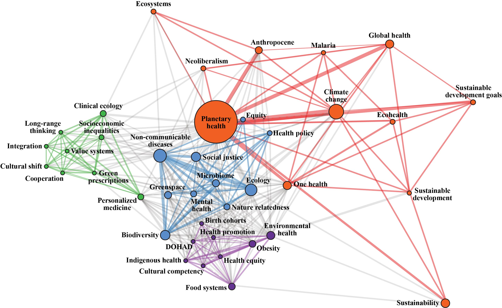

Humanity faces the daunting challenge of improving the well-being of populations while preserving the support systems essential to life on Earth. Pollution is a core part of this planetary challenge causing 9 million deaths
per year, ~90 percent occurring in low- and middle-income countries (LMICs), where historically oppressed populations are at a high risk of exposure and disease. Even in high-income countries, marginalized populations are
disproportionately exposed to pollution. My scholarship assesses the intersection of human well-being and the integrity of ecosystems that support life on Earth. I draw on a combination of geospatial, quantitative, and qualitative research
methods to assess contamination issues at multiple spatial scales. I do this while elucidating connections to other planetary health challenges and drivers of health disparities, such as environmental change and social marginalization. My interdisciplinary research program follows four main streams:
- Globalized food systems contamination and planetary health,
- Environmental health and infectious diseases,
- Built environments, health equity, and environmental justice
- Advancing knowledge in planetary health
Globalized food systems contamination and planetary health

One of the pathways that connects food systems to human health is the exposure to contaminants. While food systems are crucial to feeding the growing world population, they are progressively relying on fewer plant species and are increasing the demand for chemical use . Human and ecosystem exposure to hazardous chemicals can occur at all stages of the food production and supply chain. This includes chemicals that are intentionally applied as part of the production process, such as pesticides and inadvertent contamination that bioaccumulates in living organisms that are part of the human food web.
For example, global food systems are increasingly relying on intensive agricultural practices in low- and middle-income countries, expanding chemical exposures where national-level exposure controls and monitoring are limited. Moreover, Indigenous and traditional food systems are impacted by contamination further affecting historically minoritized and marginalized populations.
Environmental health and infectious diseases

Planetary health challenges and drivers of health disparities are deeply intertwined . My research aims to elucidate and assess the connection between infectious diseases, environmental health, and social marginalization. Such is the case of the association between mining and malaria infection in the Tropics.
Built environments, health equity, and environmental justice

Environmental racism contributes to deepening health disparities in cities across the globe. Recent research has shown how past and present structural racism has shaped today’s distribution of adverse environmental exposures in urban cities. In addition, public health interventions may disproportionately affect minoritized and marginalized populations, which was the case of strict lockdowns to reduce COVID-19 infectious in Bogotá.
Advancing knowledge in planetary health
Beyond the three empirical streams of inquiry described above, a cross-cutting theme of my research program is the advancement of conceptual frameworks, methods, and principles in planetary health research.
My PhD dissertation concluded that systems thinking and planetary health approaches are instrumental in elucidating connections between distal and structural drivers of contamination, facilitating information sharing across scales, and articulating diverse knowledge systems. Moreover, with colleagues at Berkeley, Stanford, UC Santa Cruz and Universidad de los Andes, I am studying the intersection between biodiversity and cultural values in Colombia and its potential to promote sustainability and human well-being. In addition, we have developed a proposal to advance global research on biocultural spatial distribution indexes.